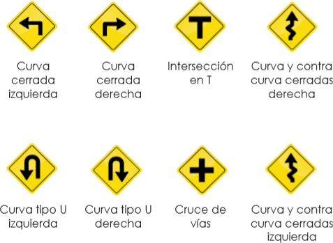

Reconocer las principales señales de tránsito preventivas de las calles y carreteras.

Observa las señales ¿las has visto en otros lugares?, ¿en dónde?, ¿para qué crees que sirven?
¿De qué color son las señales preventivas?